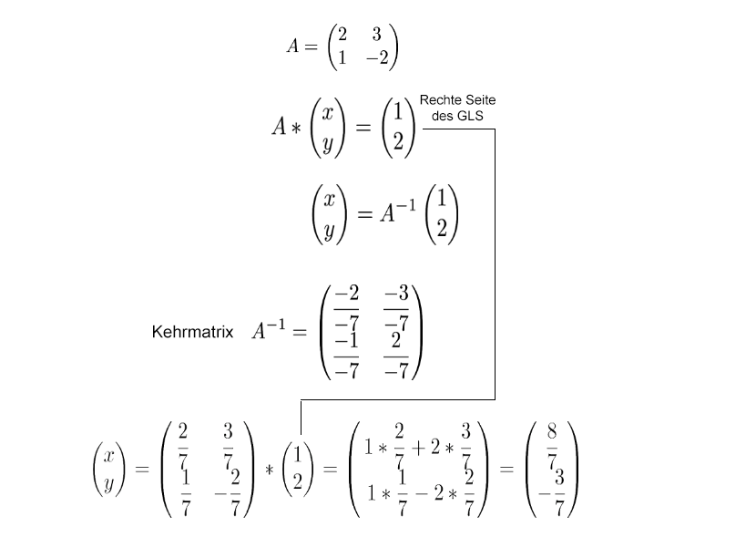

Um mit der Cramerschen Regel ein lineares Gleichungssystem zu lösen wird zuerst für x1 die erste Spalte der Matrix durch die rechte Seite des Gleichungssystems ersetzt. Für x2 wird die zweite Spalte ersetzt und die Determinanten der neu entstandenen Matrix und der ursprünglichen Matrix werden dividiert.

Eine Kehrmatrix wird erstellt und nach dem Zeile-mal-Spalte Prinzip mit der rechten Seite des Gleichungssystems multipliziert. Das Ergibt in diesem Fall den x und y wert.

Das Gleichungssystem wird schrittweise durch entsprechende Additionen der Zeilen zu einer Einheitsmatrix umgeformt. Die rechte Seite des Gleichungssystems bildet danach die gesuchten Variablen.